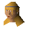
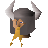

Barbarian Village
Town at 3063, 3416 · Kingdom Of Misthalin
Open on the world map → Open in knowledge graph → Below: Barbarian Village (underground)
NPCs
| NPC | Level | Spawns | Notable drops |
|---|---|---|---|
 Barbarian woman | 8 | 3 | Coins, Bronze axe, Chaos rune, Staff |
 Barbarian | 7 | 8 | Coins, Bronze axe, Chaos rune, Staff |
| shop | 1 |